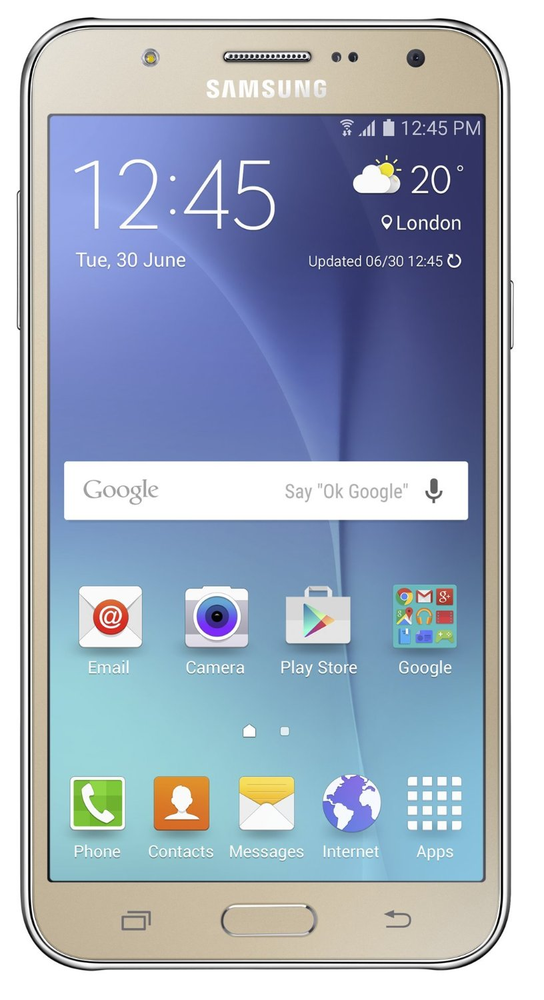

Back To Go

Samsung Galaxy J7 SM-J700F (Gold)
OS : Android v5.0.x (Lollipop)
RAM : 1.5 GB
Item
Weight : 172 g
ProductDimensions :15.2 x 0.8 x 7.9 cm
Item
modelnumber :SM-J700F
Wireless communication
technologies : Bluetooth, WiFi Hotspot
Connectivity
technologies : GSM,(850/900/1800/1900 MHz)
HSDPA,3G,(850/900/1900/2100 MHz)
4G LTE,GPRS,EDGE,WiFi
Special features :Video Calls,Dual
SIM,GPS,Music Player,Video Player,FM Radio
Accelerometer,Proximity sensor,E-mail,Expandable Memory: 128GB
Other camera
features : 13MP primary camera and 5MP front facing camera
Form factor : Touchscreen Phone
Weight : 170 Grams
Colour :Gold
Battery Power
Rating :3000mah
Phone Talk Time :18 Hours
Whats in the box :Handset, Battery, Charger and User Guide
Price: 15,250